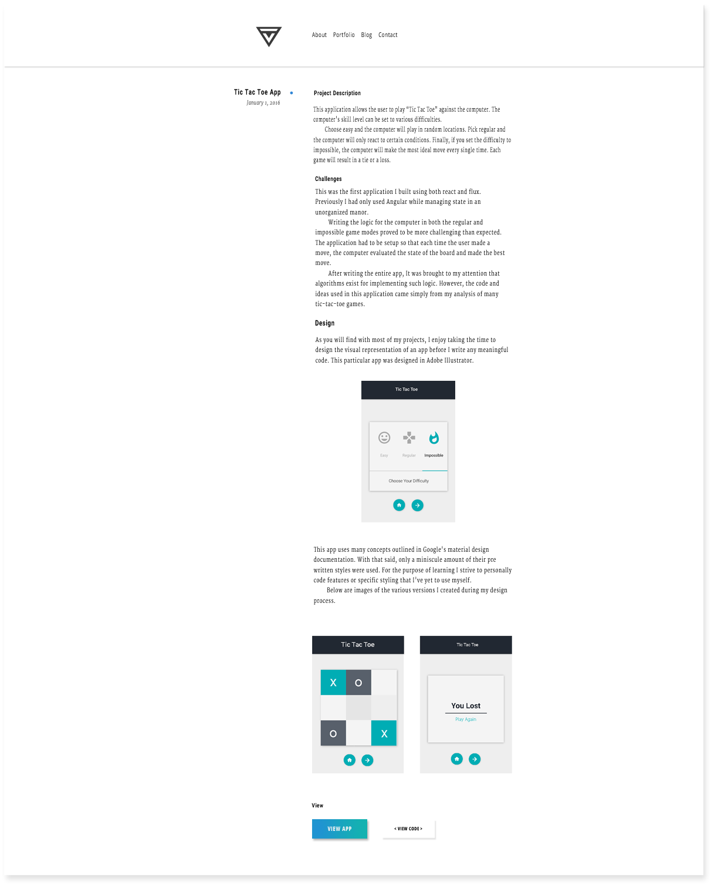

Personal Website
My first decision for this site was to make it static. I wanted to avoid building a single page application. Instead I only added JavaScript where necessary. The main reason for this was because I felt a static site would be more fitting for a blog. Also, I wanted to build something different than my previous portfolio projects which were all single page applications.
Build Process & Development Setup
Because this site is static, everything is built using custom build scripts that have been included as a single gulp task. In other words these "build scripts" are simply a series of JavaScript files that build my site. The gulp task that runs all of the build scripts, returns a promise that will only resolve once each individual script has completed its execution.
Individual Build Scripts
Each portfolio post and blog post is generated using the following process. First, all markdown files are compared with entries in a post bank array. The post bank array holds a list of objects. Each object represents a single post and contains information such as the title, date, description, type, and path.
If an object is found in the post bank array that matches a markdown file name, then the markdown file is compiled into html. Next, the html and variables from the post bank object are inserted into a jade template. Finally the jade template is rendered to create a unique index.html file for each post. The unique index.html file is then written to the file directory in a folder named after the post title.
This build allows me to navigate to individual posts simply by adding the post-name to my base URL. For example, http://terrellvest.com/personal-website loads this post about my website because an index.html file is sitting in a folder titled "personal-website". Because of the nature of how index files are automatically served from folders on static sites, little was needed on this sites backend.
Additionally, I used two Post Bank's to differentiate between portfolio posts and blog posts.
Gulp Integration
Because my build scripts all execute asynchronously, I relied heavily on Promises. Specifically I used Promise.all() to return a single promise that is only resolved when each script is complete. What I didn't know before hand, but eventually figured out, was that a Promise could be returned in a gulp task to delay the execution of subsequent tasks.
Design
The design of this site was inspired by my desire to drastically simplify everything. On my previous site, I felt that the trendy, commonly used, parallax, design took away from the site's content.

Using Illustrator and Photoshop, I drafted a mockup for the overall look and feel of the entire site. These mockups were generated in two formats: mobile and desktop.

All of this site's CSS and JavaScript have been built to handle screen resizing and usage across multiple devices. For example, navigate to the portfolio page and change the category of posts displayed from web to business or vise versa. Notice how the blue circle moves next the active category? Now resize the screen down to a mobile device view. Once the screen reaches 700px a new slider is injected into the page with styles that maintain the same state as the previous slider.
In other words, If you are viewing the business related portfolio posts and resize down to mobile, the slider will adjust accordingly. This is a small detail that I took pride in implementing.
Hosting & Deployment
In the past I have used Github Pages to host each of my projects. It is a great tool to use for single page applications or static sites. However, with this site, I wanted to better understand the deployment process to a remote server. Specifically I chose Digital Ocean. Because this site is brand new I can only speak about the initial deployment process.
The backend of this site is a simple node express setups that serves static files. Setting that up was easy. No route handling or database management was needed. My biggest hurdle was learning the process of using SSH to access a remote server. Fortunately Digital Ocean made this pretty easy. It was explained to me by GUS SUAREZ that the best way to host a site like this is via NGINX (pronounced engine-ex) and PM2. Although my knowledge on these two is limited, PM2 allows my node app to keep running even when I leave the terminal while NGINX acts as a reverse proxy.
Other Notes
I avoided large CSS frameworks and instead opted to use a minimal CSS grid called TOAST written by Daniel Eden. Building this site without the use of any large frameworks such as jQuery, React, Angular, or Bootstrap was an extremely enlightening experience. I didn't have to navigate around styles generated from any frameworks. It was much easier to achieve the exact look I had designed.
By writing my own build scripts I also was able to eliminate the need for a static site builder such as Jekyll. Although static site builders can be useful, I feel many of them still limit you.
Summary
I built this site as a static site so that I could include a blog and individual write up for each of my portfolio pieces. In doing so, I wrote the build process from scratch and eliminated the use of large frameworks. This inherently forced me to hone my understanding of vanilla JavaScript and SASS / CSS styling.